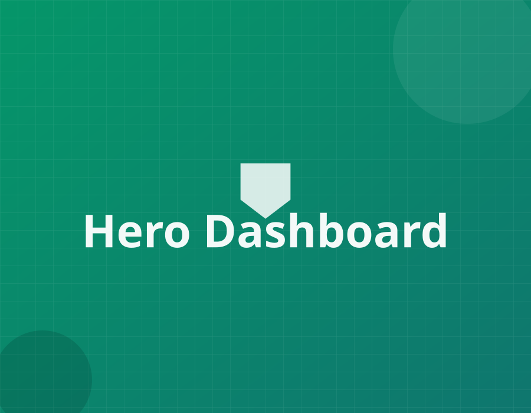
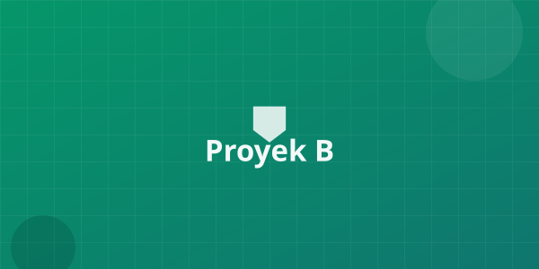
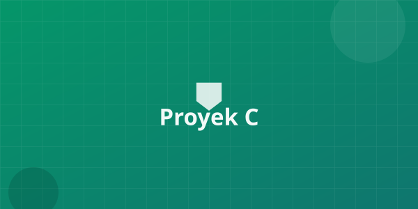
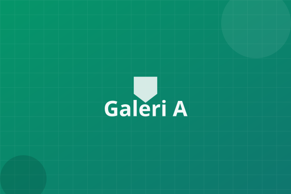
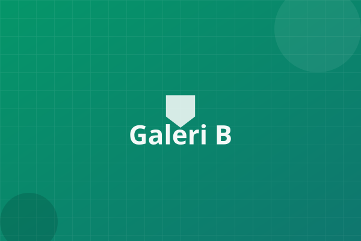
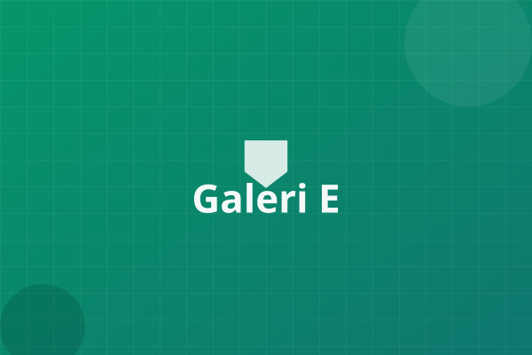

Tugas, tim, dokumentasi foto, dan laporan — semuanya rapi, responsif, dan siap dipakai di lapangan.

Semua kebutuhan admin proyek lapangan tersedia sebagai komponen siap pakai.
Atur tugas harian dengan papan kanban drag-and-drop dan lihat riwayat timeline proyek.
Unggah dokumentasi lapangan dengan drag & drop, lengkap dengan galeri dan lightbox.
Pantau jadwal dengan gantt chart dan hasilkan laporan progress secara konsisten.
Kontrol akses per peran — supervisor, operator, dan admin dengan izin yang jelas.
Tetap terinformasi — unggahan foto, laporan baru, dan tenggat tugas dalam satu feed.
Mode light, dark, dan auto mengikuti sistem — nyaman digunakan kapan saja.
Contoh kartu proyek dengan progress, tim, dan status.

Ditunda
SelesaiGaleri foto proyek dengan filter kategori dan lightbox.



Daftar gratis dan rasakan kemudahan memantau tugas, tim, dan dokumentasi lapangan — langsung dari satu dashboard.
Masukkan email — akun Anda siap dalam 1 menit.